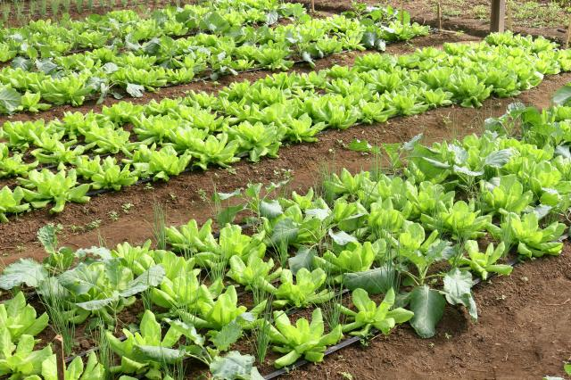
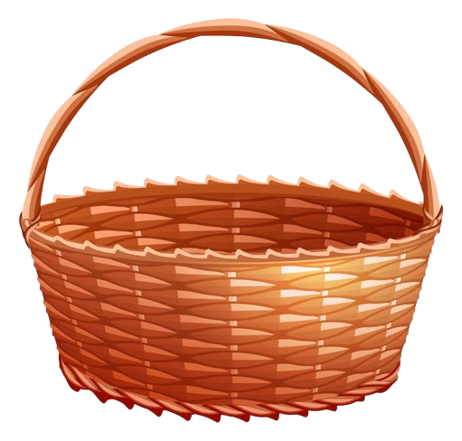
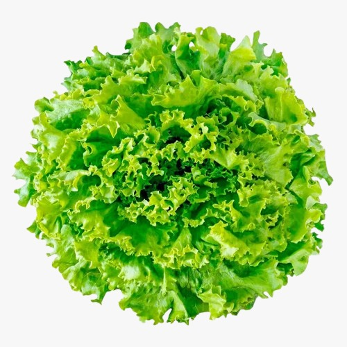
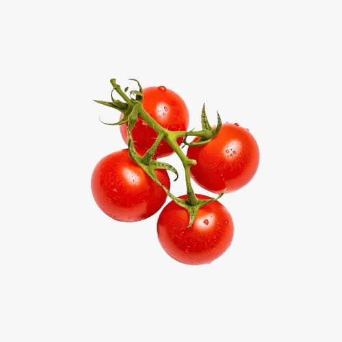
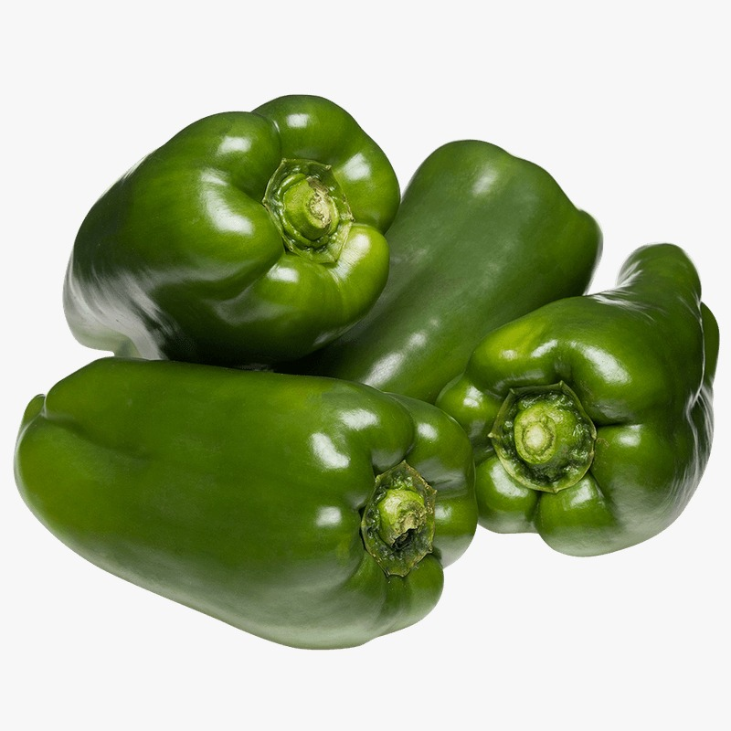
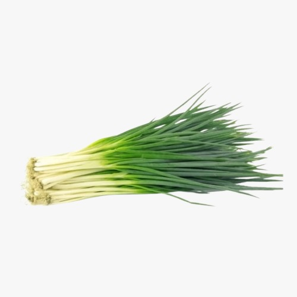
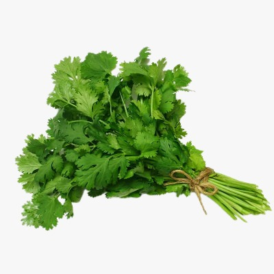
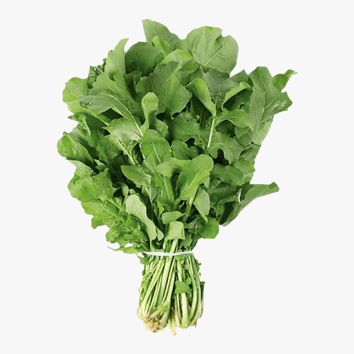

Do chão que
nossos avós
abençoaram
A Família Ferreira não escolheu o campo — o campo os escolheu.
Por três gerações, cultivamos o sertão da Paraíba com as mãos
calejadas de quem sabe que a terra não perdoa o desleixo, mas
recompensa o cuidado com uma generosidade que poucos conseguem
compreender sem viver.
Nascemos e crescemos no Sítio Melada, em Catolé do Rocha. O sol
forte do Nordeste, que muitos enxergam como obstáculo, aprendemos
a usar como aliado. Aqui, cada semente plantada é um ato de fé.
Cada colheita, uma resposta.

A terra como
herança e chamado
A três gerações vivendo do campo e para o campo, a Família Ferreira
aprendeu que a terra é mais do que um meio de subsistência.
É um legado, um chamado e uma promessa de futuro.
Cultivamos com amor, colhemos com gratidão e entregamos
as primícias de todas as coisas para que você tenha o melhor da terra em sua mesa.
O que a terra
trouxe hoje


Alface-Crespa 🥬
Colhida pela manhã, direto do canteiro
para a sua salada.
R$3,00

Tomate Cereja 🍅
R$5,00
Adocicado, firme e sem agrotóxico.
Perfeito para petiscos e saladas.

Pimentão 🫑
R$1,00
Carnudo e saboroso. Base de todo bom
refogado nordestino.

Cebolinha Verde 🌱
R$2,00
Colhida na medida certa, com aroma
forte e sabor limpo.

Coentro 🍀
R$3,00
O tempero do Nordeste. Fresco, aromático
e cultivado sem veneno.

Rúcula 🍃
R$3,00
Cultivada naturalmente para mais
sabor e qualidade.
Fale com
a família
Fazemos entregas em Catolé do Rocha e região. Para pedidos maiores,
encomendas especiais ou parcerias, entre em contato diretamente conosco.
Localização
Fazenda da Família Ferreira
Sítio Melada — Catolé do Rocha, PB
Pedidos e encomendas direto
no nosso WhatsApp
Colheita e Entrega
Segunda a Sábado, das 6h às 18h
Entrega às terças e sextas
Pedido direto pelo WhatsApp
Sem aplicativo, sem cadastro, sem complicação. Monte sua cesta aqui
no site e envie o pedido já formatado direto para nós pelo WhatsApp.